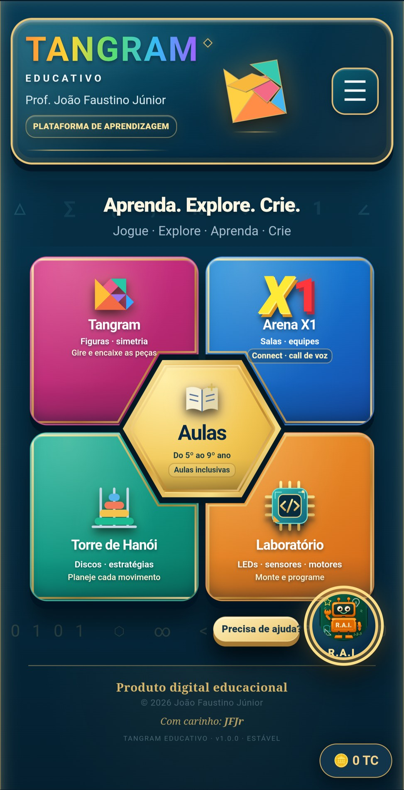
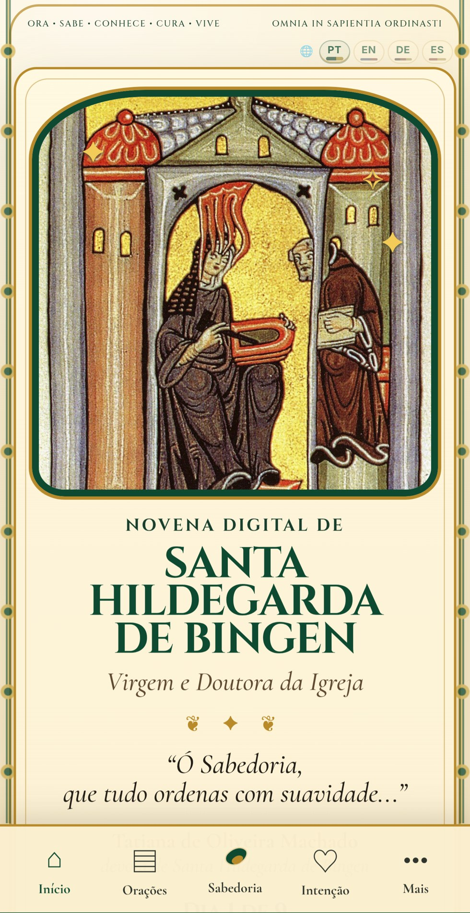
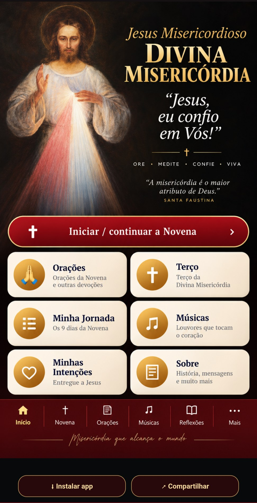
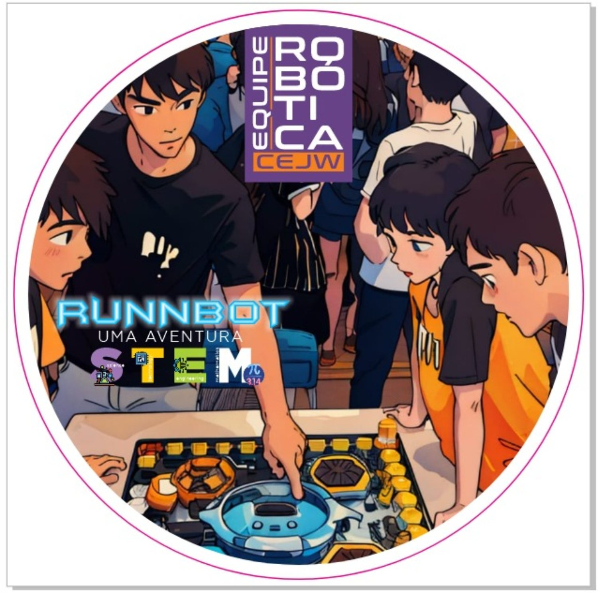

Educação
Tangram Educativo
Pensamento computacional, desafios e experiências interativas.
Uma seleção de experiências educacionais, criativas e devocionais disponíveis para utilização. Acesse o aplicativo original e, quando ele oferecer instalação como PWA, adicione-o à tela inicial do seu dispositivo.
Ciência, pensamento computacional, imaginação, fotografia e espiritualidade.
9 aplicativos selecionados

Pensamento computacional, desafios e experiências interativas.

Sistema Solar, céu noturno, exploração espacial e astronomia.

DNA Matemático, ondas, gráficos e relações entre números e formas.

Conteúdo devocional e cultural sobre Santa Hildegarda.

Orações e conteúdo devocional.

Jogo STEAM com checkpoints, desafios e trabalho em equipe.

Fotos, memórias, compartilhamento e detalhes técnicos das imagens.
Critério do acervo: esta página reúne apenas os aplicativos selecionados para acesso público. Projetos realizados com estudantes, livros e outros trabalhos autorais permanecem nas áreas de apresentação e memória, sem oferta de download aqui. Novena de São José e Tia Tati não integram esta biblioteca.